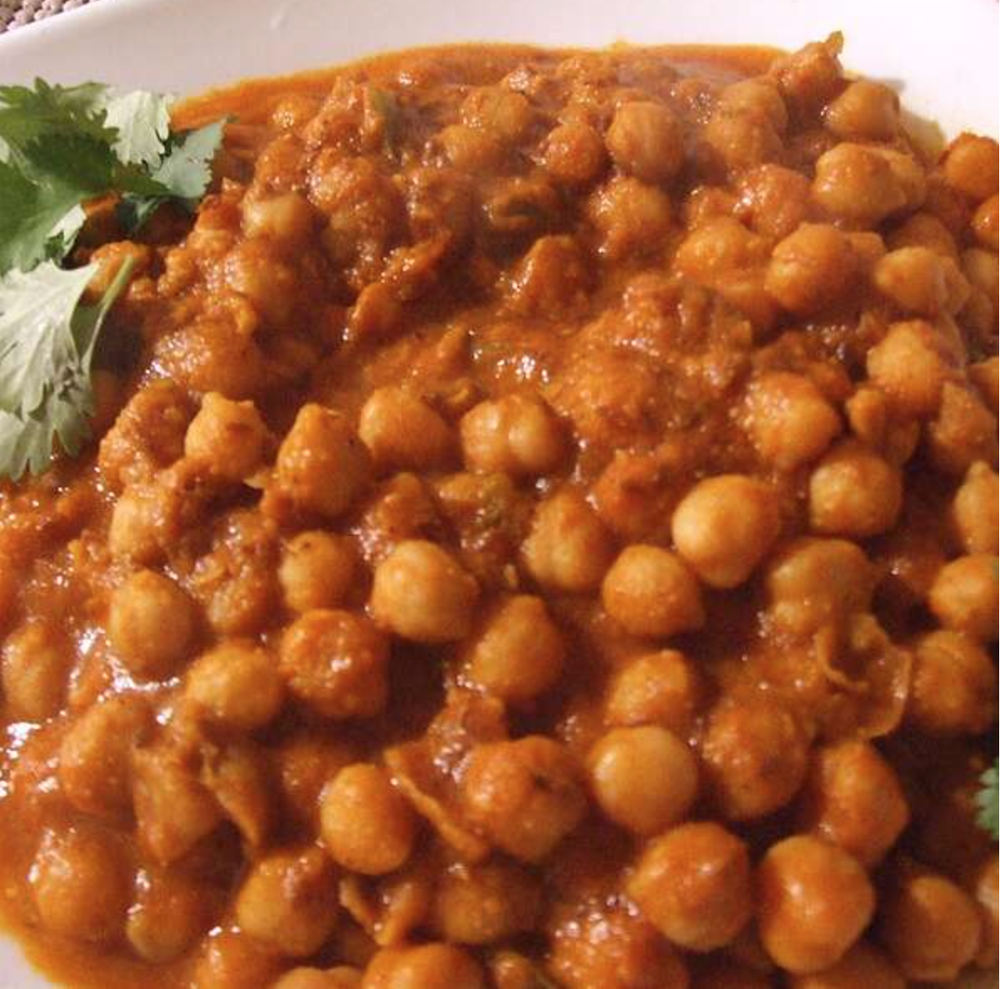

Cholay (Curried Chickpeas) Recipe

Description
This is a very flavorful recipe from North India, usually eaten with fried bread like bhatura or puri.
I like to serve it over rice for a very filling meal. You can also try it as a quick snack over toasted bread.
This recipe is much quicker to make if you use precooked canned beans, but I like to think that the authentic
flavor comes from doing it the hard way!
Ingredients
- 2 cups water
- 1 tea bag
- 1 bay leaf
- 2 (15.5 ounce) cans garbanzo beans, drained
- 2 tablespoons vegetable oil, divided
- 1 onion, sliced
- 3 tomatoes, chopped
- ¼ cup fresh cilantro leaves
- 1 teaspoon ground coriander
- 1 teaspoon cumin seeds
- 1 teaspoon grated fresh ginger root
- 1 teaspoon grated garlic
- 1 onion, finely chopped
Steps
-
Place the 2 cups water, tea bag, and bay leaf into a pot, and bring water to a boil.
Reserving about 1/2 cup garbanzo beans, stir the beans into the boiling water.
When beans are heated through, discard the tea bag and bay leaf.
Remove from heat. Drain the beans, reserving water, and set aside.
-
Heat 2 teaspoons oil in a skillet over medium heat, and saute the sliced
onion until tender. Remove from heat, cool, and mix in the reserved garbanzo
beans, 1 tomato, and 1/2 the cilantro leaves. Set aside.
-
Heat the remaining oil in a skillet over medium heat. Blend in the coriander,
cumin seeds, ginger, and garlic. Cook and stir for 15 to 20 seconds, until lightly
browned. Mix in the turmeric. Stir the chopped onion into the skillet, and cook until
tender. Mix in the remaining tomatoes. Season with salt, cayenne pepper, and garam masala.
Bring the tomato liquid to a boil, and cook about 5 minutes. Stir in the boiled garbanzo
beans, sliced onion mixture, and enough of the reserved water to attain a thick, gravy-like
consistency. Continue to cook and stir 5 minutes. Garnish with the remaining cilantro leaves to serve.